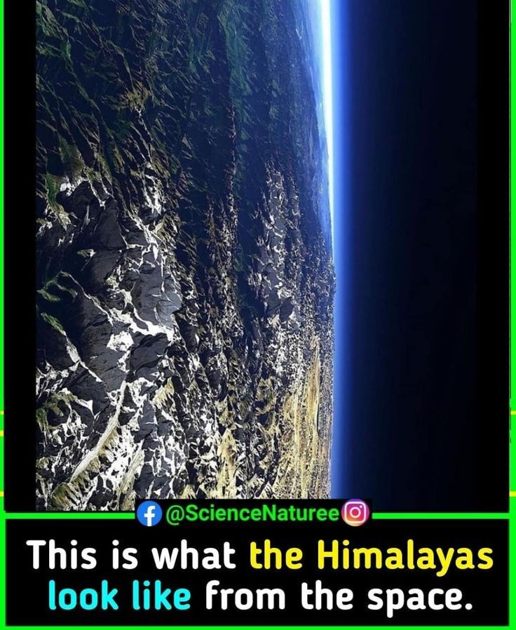

Ozone was first discovered and isolated by the German-Swiss chemist Christian Friedrich Schönbein in 1839. Ozone is a pale blue gas with a distinctive pungent smell.
Meet the scientist who discovered the hole in the ozone layer Jonathan Shanklin In 1985 Jonathan Shanklin was a junior researcher at BAS when he discovered a hole in the invisible shield that protects us from solar radiation. We catch up with him to learn about his work and how it has made a difference. It’s 36 years since scientists first discovered the hole in the ozone layer. An invisible shield that absorbs harmful UV rays from the Sun, and without which complex life on Earth would not exist. The finding spurred a whole environmental movement in the 1980s and led to the total ban of chlorofluorocarbons (CFCs), the chemicals responsible for destroying ozone.
Ozone (O3) is made naturally in the atmosphere when three oxygen atoms join together to form a colorless gas. The earth is wrapped in layers of air called the atmosphere. Stratospheric ozone is found in the stratosphere, the second layer of the earth’s atmosphere, 10 to 30 miles above the surface. Life couldn’t exist without this protective ozone, which is also called the “ozone layer.” The sun gives off light, heat, and other types of radiation. Too much UV (ultraviolet) radiation can cause skin cancer, cataracts, and harm plants and animals. Ozone high in the atmosphere absorbs, or takes in, some of the sun’s harmful UV rays before they reach the ground. Just as sunscreen helps protect your skin from getting burned, ozone in the stratosphere works like earth’s sunscreen.